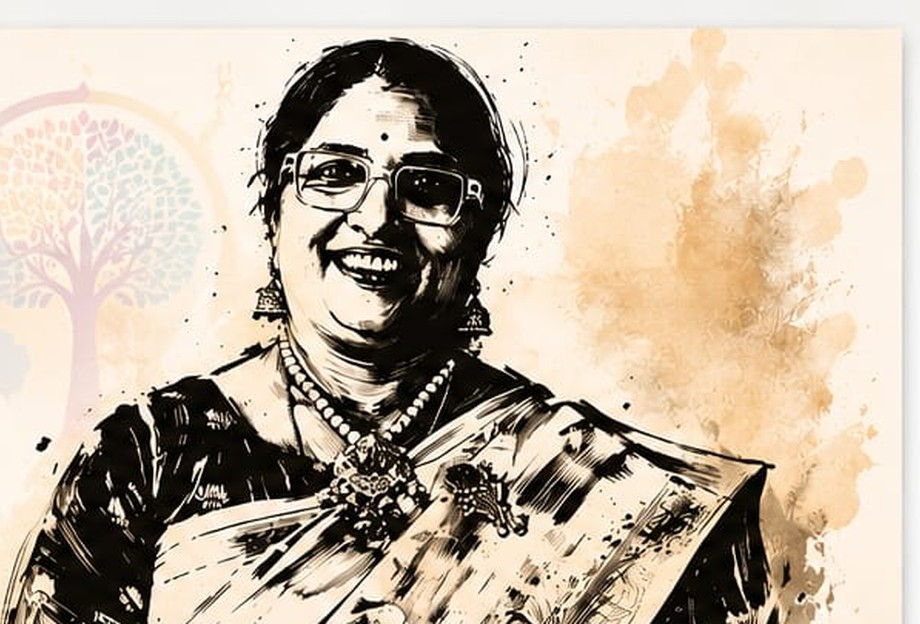

LAC
Paid clinical counselling, therapy, and learning support.
Clinical enterprise + philanthropic outreach
Learning & Ability Counselling Centre is the paid clinical practice led by Vineela Anney. Neuro Bridge Foundation is the social impact arm that extends counselling, education support, medical assistance, and awareness programs to families who need help most.

Paid clinical counselling, therapy, and learning support.
Free and assisted outreach through donations and membership.
Enterprise architecture
The brand works like a CSR-aligned healthcare model: LAC remains the professional service provider, while NBF carries the charitable mission for families and communities with limited access.
The commercial clinical flagship for assessment-led counselling, therapy, development support, family guidance, and confidence building.
Paid services and social work share the same care philosophy: every mind matters, every life has potential, and families are part of the healing journey.
The philanthropic arm supporting underprivileged children, students, women, adults, elderly individuals, and rural families.
LAC clinical services
The centre focuses on communication, emotional balance, behaviour improvement, confidence, social interaction, learning ability, mental strength, family understanding, and positive life changes.
Clinical process
Neuro Bridge Foundation
NBF supports children, students, women, families, adults, and elderly individuals facing emotional, psychological, developmental, neurological, educational, behavioural, and social challenges.
The foundation conducts free counselling and therapy camps, rural education support, mental health awareness programs, community development activities, and assistance for medical or surgical needs.
Stationery, books, school supplies, rural education programs, and learning assistance.
Free counselling, therapy camps, developmental support, and emotional wellness programs.
Support for financially disadvantaged families facing medical and surgical needs.
Books, pens, ration, rice, dal, blankets, clean clothes, and toys for children.
Founder & Clinical Director
Psychologist, hypnotherapist, counsellor, speech trainer, and graphology practitioner.
The foundation grew from lived experience. During her daughter's childhood, Vineela Anney faced severe health complications in the family, including liver hepatitis-related complications, septic shock, blood poisoning, medical negligence, gangrene-related loss of some fingers and toes, and the emotional and financial pressure that followed.
That experience shaped a mission: to support families who feel unheard, unsupported, or limited by circumstances. After Covid, she pursued advanced psychology and counselling training and now works with schools, colleges, organizations, software employees, women, children, and families.
"Therapy is not only for the child. Parents are also part of the healing journey."
What progress can look like
Speech improvements, better behaviour, learning confidence, emotional regulation, and social interaction.
More patience, consistent home practice, trust in the process, and a calmer home environment.
Awareness, dignity, basic needs support, and access to counselling where care is otherwise limited.
Contact
For paid counselling and therapy services, contact LAC directly. For membership, physical donations, free-camp support, or community assistance, use the NBF donation channel.